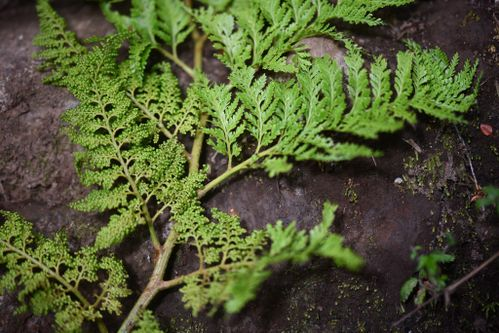

Thyrsopteridaceae
(No common name; often Thyrsopteris Family)
Thyrsopteridaceae is a monotypic family of ferns in the order Cyatheales, containing only the species Thyrsopteris elegans. This unique fern is endemic to the Juan Fernández Islands archipelago, located off the coast of Chile. It is characterized by a stout trunk, large highly divided fronds, and striking dimorphism between its sterile (leafy) and fertile (non-leafy, sorus-bearing) pinnae.
Overview
Thyrsopteris elegans, the sole member of Thyrsopteridaceae, is a distinctive fern representing an early diverging lineage within the tree fern order Cyatheales. It typically grows a stout, erect trunk (caudex) reaching 1-2 meters in height, qualifying it as a small tree fern or sub-arborescent fern. Its large, complex fronds can reach up to 3.5 meters long.
Endemic to the remote Juan Fernández Islands (Robinson Crusoe Island, Alejandro Selkirk Island, and Santa Clara Island), it inhabits moist forest environments, often in shaded ravines or slopes. Its most remarkable feature is the extreme dimorphism between the sterile and fertile parts of its fronds. The fertile pinnae are reduced to branching axes densely covered in stalked, cup-shaped indusia containing the sporangia, bearing no resemblance to the leafy sterile pinnae.
As a geographically isolated and phylogenetically distinct species, Thyrsopteris elegans is of significant interest for understanding the evolution and biogeography of the Cyatheales order. It is homosporous, reproducing via spores released from its unique fertile structures.
Quick Facts
- Scientific Name: Thyrsopteridaceae
- Common Name: Usually referred to by genus, Thyrsopteris
- Number of Genera: 1 (Thyrsopteris)
- Number of Species: 1 (Thyrsopteris elegans)
- Distribution: Endemic to the Juan Fernández Islands (Chile).
- Key Features: Sub-arborescent trunk, large highly divided fronds, extreme frond dimorphism (fertile pinnae non-leafy), homosporous, stalked cup-shaped indusia.
- Evolutionary Group: Polypodiopsida (Leptosporangiate Ferns) - Cyatheales
Key Characteristics
Growth Form and Habit
Forms a stout, erect trunk (caudex), typically 1-2 meters tall, sometimes shorter. Sub-arborescent habit.
Fronds (Leaves)
Fronds are large (up to 3.5 meters long), borne in a terminal crown, broadly triangular (deltoid) in outline.
- Structure: Highly divided, 3-pinnate to 5-pinnate.
- Texture: Somewhat leathery or firmly herbaceous.
- Vernation: Young fronds show circinate vernation.
- Petioles (Stipes): Stout, covered in scales, especially at the base.
Scales
Scales are present on the rhizome apex and petiole bases. They are typically narrow, brown, and non-clathrate (cells not lattice-like).
Frond Dimorphism
A key feature is the extreme dimorphism between sterile and fertile pinnae within the same frond (or sometimes entire fronds being fertile/sterile).
- Sterile Pinnae/Pinnules: Leafy, green, photosynthetic, pinnately divided.
- Fertile Pinnae/Pinnules: Completely lack photosynthetic tissue (non-laminate). They are reduced to highly branched axes bearing dense clusters of stalked sori.
Sori and Indusial Characters
Thyrsopteridaceae are homosporous. Spores are produced in sori borne exclusively on the specialized fertile pinnae.
- Sorus Position: Sori are clustered densely on the ultimate segments of the non-leafy fertile pinnae.
- Sorus Structure: Sori are gradate (sporangia mature sequentially from base to apex).
- Indusium: Each sorus is protected by a conspicuous, stalked, cup-shaped (cyathiform or urn-shaped) indusium. The stalk elevates the cup containing the sporangia.
Spores
Spores are trilete, tetrahedral, and typically have a somewhat granular or ridged surface.
Field Identification
Identifying Thyrsopteris elegans relies on its unique combination of features and restricted location.
Primary Identification Features
- Location: Found only on the Juan Fernández Islands.
- Habit: Stout trunk (sub-arborescent).
- Extreme Frond Dimorphism: Presence of both typical leafy sterile pinnae and highly modified, non-leafy fertile pinnae bearing dense reproductive structures.
- Stalked, Cup-shaped Indusia: Fertile segments covered in small, stalked cups containing sporangia.
- Scales: Presence of scales on petiole bases.
Common Confusion Points
Within the Juan Fernández Islands, other ferns exist, including other tree ferns:
- Dicksonia berteroana: Another tree fern endemic to the islands, but belongs to Dicksoniaceae. It has hairs (not just scales) and marginal sori with two-valved indusia, lacking the extreme dimorphism of Thyrsopteris.
- Blechnum cycadifolium: A large endemic Blechnaceae species with a trunk, but its sori are linear along the costa (not round in cups) and it lacks the distinct fertile/sterile pinna dimorphism type seen in Thyrsopteris.
Field Guide Quick Reference
Look For (Thyrsopteris elegans):
- Juan Fernández Islands location
- Stout trunk (1-2m)
- Large, highly divided fronds
- Strong dimorphism (leafy sterile vs. non-leafy fertile pinnae)
- Fertile parts covered in stalked, cup-shaped indusia
- Scales on stipe base
Distinguish From (on islands):
- Dicksonia (hairy, marginal sori)
- Blechnum (linear sori)
- Other ferns (lack trunk and/or extreme dimorphism)
Notable Examples
The family contains only one species.

Thyrsopteris elegans
(No common name)
The sole species in the family, endemic to the Juan Fernández Islands. It is notable for its sub-arborescent habit, large complex fronds, extreme dimorphism between sterile and fertile pinnae, and unique stalked, cup-shaped indusia covering the sori on the fertile segments.
Phylogeny and Classification
Thyrsopteridaceae is a monotypic family placed within the order Cyatheales. Molecular phylogenetic studies consistently show it represents an early diverging lineage within the order, often sister to a large clade containing most other families like Cyatheaceae, Dicksoniaceae, Metaxyaceae, and Cibotiaceae (though precise relationships among these can vary slightly between studies).
Its isolated phylogenetic position, combined with its unique morphological features (especially the extreme dimorphism and stalked indusia) and restricted endemic distribution, highlights its importance as a relictual lineage that likely diverged early in the evolutionary history of the Cyatheales.
Position in Plant Phylogeny
- Kingdom: Plantae
- Clade: Tracheophytes (Vascular plants)
- Class: Polypodiopsida (Leptosporangiate ferns)
- Order: Cyatheales
- Family: Thyrsopteridaceae
Evolutionary Significance
Thyrsopteridaceae is significant for:
- Early Divergence in Cyatheales: Provides insights into the ancestral characteristics and early evolution of tree ferns and their relatives.
- Island Endemism & Relictualism: Represents a unique lineage surviving in isolation on oceanic islands.
- Morphological Uniqueness: Exhibits extreme frond dimorphism and specialized reproductive structures (stalked indusia) not seen elsewhere in the order.